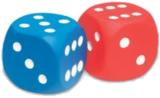

Jugando con dados
Sandra propone a Daniel el siguiente juego: "Lanzamos dos dados. Si la suma es menor que 6, tú ganas, y si la suma es mayor que 6, yo gano. Además, te doy la ventaja de que cada vez que tú ganes , acumulas tres puntos, y yo, sólo dos". ¿Es justo el juego?
Hacer click en cada título para ver contenido:
COMPRENDE
En un juego con estas características, podemos identificar dos sucesos:
A: Sale una suma menor que 6.
B: Sale una suma mayor que 6.
Las esperanzas matemáticas de ganar de Daniel y Sandra dependen de la probabilidad de sus sucesos favorables y del puntaje que obtienen cada vez.
PLANIFICA

- Determinamos el espacio muestral del experimento aleatorio y de los sucesos
- Elaboramos una lista con las sumas que cumplan cada condición
- Calculamos la probabilidad de los suceso A y B
- Determinamos la esperanza matemática de ganar de cada jugador y las comparamos
EJECUTA
- Determinamos el espacio muestral y los sucesos A y B
E={(1;1), (1;2), (1;3), (1;4), (1;5), (1;6), (2;1), ..., (6;5), (6;6)}
A={(1;1), ...,(4;1)} entonces n(A) = 10
B={(1;6), ...,(6;6)} entonces n(B) = 21
- Calculamos la probabilidad de los suceso A y B
\mathbf { P(A) = \frac{10}{36} = \frac{5}{18} \,y \, P(B) = \frac{21}{36} = \frac{7}{12}}
- Determinamos la esperanza de ganar de cada jugador:
\mathbf {E_Daniel = 3 \cdot \frac{5}{18} = \frac{5}{6}; \, \, E_Sandra = 2 \cdot \frac{7}{12} = \frac{7}{6} }
Como E_Daniel < E_Sandra concluímos que el juego no es justo
COMPRUEBA
Comprueba experimentalmente. Juega con un compañero, tomen los lugares de Daniel y Sandra y anoten el resultado de 20 lanzamientos. Calculen sus puntajes de acuerdo con la reglas de juego. ¿Quién ganó? ¿Por qué?